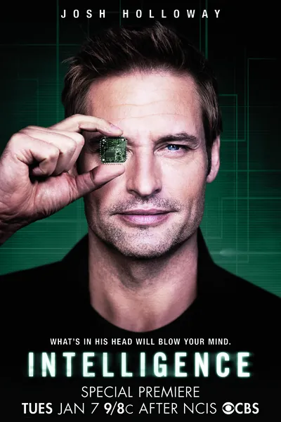

Сериал · 2014 · ИИ, Фантастика
Комедия CBS о агенте ЦРУ, прикреплённом к учёному с чипом в голове: он может подключаться к сетям напрямую, видеть через чужие камеры и открывать замки взглядом. Сюжетная рамка стандартна — охота на террористов, прототипы нового оружия, — но сама идея «человека как конечного узла сети» обыграна с юмором и воображением. Лёгкий сериал о том, что произойдёт, когда поиск и пароли станут ненужными: мир станет одинаково удобным для нас и для тех, кто за нами следит.
A CBS comedy about a CIA agent assigned to a scientist with a chip in his head: he can connect to networks directly, see through other people's cameras and unlock doors with a glance. The frame is standard — hunting terrorists, new weapons prototypes — but the idea of 'a human as an endpoint' is played with humor and imagination. A light series about what happens when search and passwords become unnecessary: the world becomes equally convenient for us and for whoever watches us.
← Вернуться в каталог IT Movies